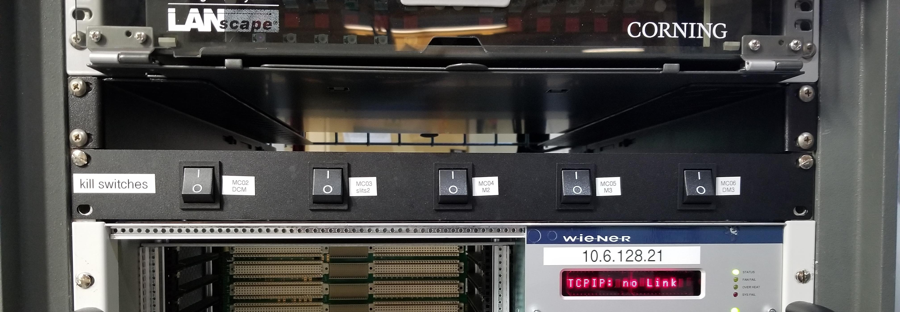

9. Troubleshooting¶
In this section, solutions are given for problems that BMM’s visitors occasionally encounter.
9.1. Pausing BlueSky¶
There are a small number of ways that you can unintentionally find yourself outside of BlueSky. One of them is to accidentally hit Ctrl-z, which is unfortunately located close to Ctrl-c.
Ctrl-z serves to suspend BlueSky, temporarily returning you to the Unix command line. It looks like this:

Fig. 9.1 Accidentally exiting BlueSky and returning to the Unix command line.¶
Note that BlueSky said “Stopped”, then the white and blue prompt is presented. This indicates that BlueSky is paused rather than exited.
To resume BlueSky, type the command fg and hit Enter.
You will find yourself back at the BlueSky prompt and can carry on
normally.
9.2. Exiting BlueSky¶
Another possibility is that BlueSky has exited entirely – possibly because something has happened to put the program into an unworkable state. This will usually be accompanied by a lengthy “stack trace”, i.e. a bunch of weird code and error messages printed to the terminal window, followed by the white and blue prompt seen in the picture above.
In this case, try typing bsui at the command line with the white
and blue prompt, then hit Enter. This will start a new
BlueSky session and should remember all the metadata from the
“start_experiment” command that began your experiment.
9.3. Amplifier fault¶
From time to time, a fault is triggered on one of the motor
amplifiers. The most common examples involve the jacks controlling
the height and pitch of the focusing and harmonic rejection mirrors,
M2 and M3. This is usually observed when trying to use the
change_edge() command (which, among other things, moves the
mirrors to the correct positions).
The error message on screen will look something like this
Todo
Capture an example of this
The first solution is to try killing the power to the amplifiers on the correct MCS8. Switch the corresponding switch to the off ○ position, wait at least 10 seconds, then flip the switch back to the on | position. Try moving the motors again.
{kind=link}

Fig. 9.2 The MCS8 kill switches on rack D.¶
If toggling the switch does not clear the problem, the next solution to try is to power cycle the appropriate MCS8. You should stop the corresponding IOC before cycling the power, then restart the IOC afterwards. Contact Bruce or other beamline staff before doing this.
9.4. Failed hutch search¶
Sometimes the hutch search fails for mysterious reasons. A likely cause is that the door “bounced” a bit as it closed. This confuses the circuit that checks to see that the magnetic latch holding the door closed is engaged.
When that (or some other thing out of your control) happens to confuse the personnel protection system, the search fails and reports the failure by printing a message in yellow text on the HDMI screen. Here is what that looks like:

Fig. 9.3 The hutch HDMI display showing the yellow text of a failed search.¶
When this happens, it is usually sufficient to simply repeat the search. If the yellow text failure happens again, call the floor coordinator at extension 5046.
This manual is copyright © 2018-2019 Bruce Ravel
 This document is licensed under The Creative Commons Attribution-ShareAlike License.
This document is licensed under The Creative Commons Attribution-ShareAlike License.
If this document is useful to you, please consider supporting The Creative Commons.